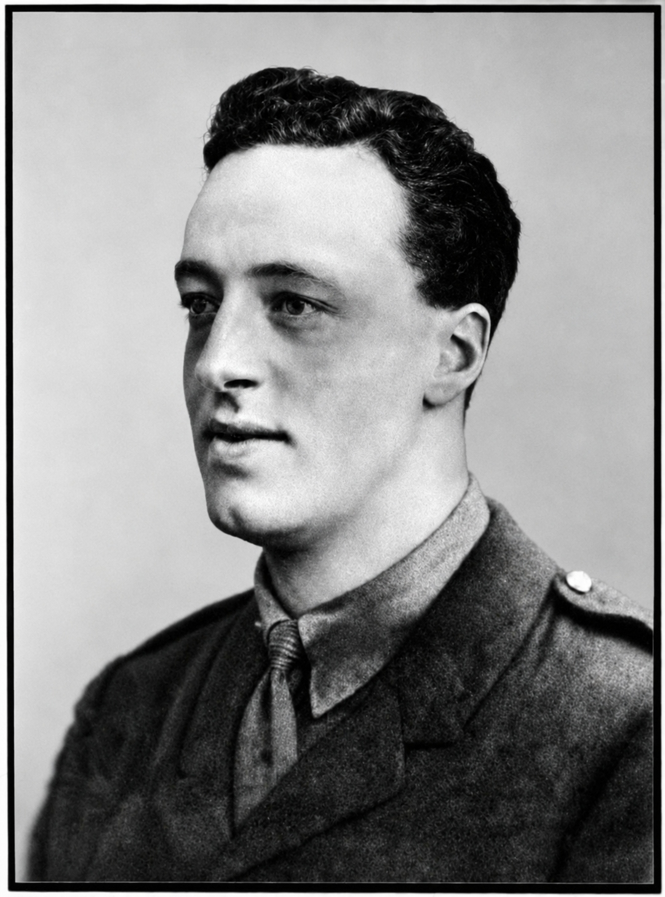
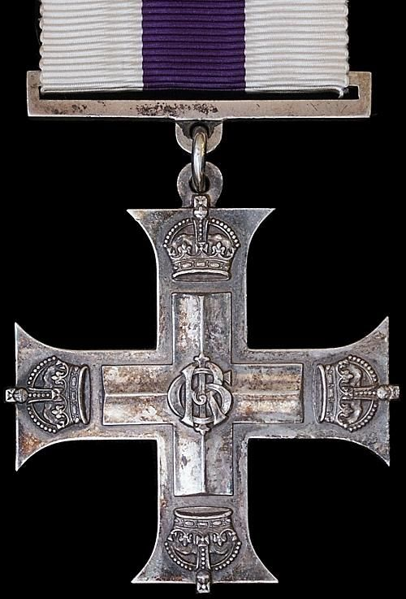

Stanley George Woodbridge, MC


Stanley George Woodbridge was born in Stanmore in early 1886, baptised on 17 February 1886 in the parish of Harrow. He grew up in a large, close-knit family as the youngest son of James and Annie Eliza Woodbridge, who lived at Walwyns, Peterborough Road, Harrow. His father had long worked as a hotel proprietor and licensed victualler, and the family's presence in Harrow stretched back through several census records.
Stanley attended the John Lyon School, where he quickly became known for his athletic ability and leadership. He captained the school football team in the 1901–02 season, remembered as "one of the most successful seasons the School ever had" (Harrow Observer, 27/12/1918). He later led the Old Lyonian Football Club for seven years before the war, and was equally prominent in cricket — described as "a dashing batsman, a good bowler, and a brilliant fieldsman." His sporting reputation made him one of the most popular Lyonians of his generation.
By 1911, Stanley was working as a clerk at the London Stock Exchange, living at Kenton's Lane Farm, Harrow Weald. His life was firmly rooted in Harrow's sporting and social circles.
Harrow Observer, 04/09/1914 — "Stanley Woodbridge… has discarded the willow for the rifle"
In March 1916, he married Irene Annie Puddefoot at Christ Church, Brondesbury. Their son, John, was born the following year.
Stanley enlisted immediately after the outbreak of the First World War, joining the 10th (Stockbrokers) Battalion, Royal Fusiliers as a private in August 1914. After training at Colchester and Salisbury Plain, he was sent to France in July 1915. His leadership potential was quickly recognised. In January 1916, he returned to England to take up a commission in the Northumberland Fusiliers, later returning to the Western Front as an Acting Captain. On 16 June 1917, he was severely wounded while leading his company.
Harrow Observer, 29/06/1917 — "He received a gunshot wound in the chest, the bullet striking and causing his revolver to explode."
He was evacuated to Salisbury, where he slowly recovered. During this period he was gazetted Captain, and soon afterwards awarded the Military Cross for conspicuous gallantry.
His colonel wrote that he "thoroughly deserved it and more." In October 1917, he was received by King George V to be formally decorated.
Despite his injuries, Stanley returned to active duty in September 1918, attached to the West Yorkshire Regiment. On 23 October 1918, he was struck by shellfire, suffering devastating wounds that required the amputation of one leg. He was evacuated to the Fourth London General Hospital, Denmark Hill, where he initially rallied. But a second operation proved fatal.
Stanley George Woodbridge died of his wounds on 19 December 1918, aged 32, more than a month after the Armistice.
Harrow Observer, 27/12/1918 — "He passed away… and was buried with full military honours in the Old Harrow Churchyard."
He was laid to rest in St Mary's Churchyard, Harrow on the Hill, in the same grave as his parents. Stanley's death was deeply felt across Harrow. The Old Lyonians football club, resuming play in 1919, noted that they had lost "their captain… whose excellent leadership and sportsmanlike example contributed not a little to the success of the club in past days."
Stanley George Woodbridge's story is one of devotion — to family, to sport, to community, and ultimately to duty. He was remembered as cheerful, straight-dealing, open-hearted, and utterly dependable. His courage on the battlefield matched the leadership he had shown on the playing fields of Harrow. His life was short, but it left a long shadow: a man whose character earned him the love of his peers, and whose bravery earned him the Military Cross and a place among Harrow's honoured dead.